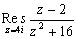

殘數
更新日期: 2011年2月4日
程式可以估算複函數的殘數值(Complex Residue)。
程式需要在 CMPLX 模式下執行，因此在選擇新程式位置後，按 2 選用CMPLX模式。
注意: πr 是按 Shift EXP Shift Ans 2，o 是按 Shift Ans 1
程式 (55 bytes，不包綠色的函數方程)
ClrMemory: ?→A: Abs( A: . 01(Ans + (Ans=0→B:
For 18o→C To 2πr Step C: A + B∠C: (Ans - 2) ÷ (Ans2 + 16:
Ans(B∠CM+: Next: M ÷ 20
註1: 綠色的(Ans - 2) ÷ (Ans2 + 16是函數方程(變數是Ans)，若果想計算其它函數的殘數值，只要修改綠色的部份。
註2: 要修改的函數方程較接程式底部，只要進入程式編輯模式後，按 ↓ 則可直接到達程式最尾的位置，可以較快找到要修改函數的位置。
例題: 計算

按 Prog 1 再按 4i EXE (顯示0.5) 再按 Shift Re<=>Im (顯示0.25i)
所以殘數為 0.5 + 0.25i
註: 由於程式使用梯形法則計算殘數，所以計算時間會較長。
有關殘數的資料，可以參考以下網址:
Complex Residue -- from Wolfram MathWorld
返回 CASIO fx-50FH、fx-3650P II、fx-50FH II及fx-50F PLUS 程式集